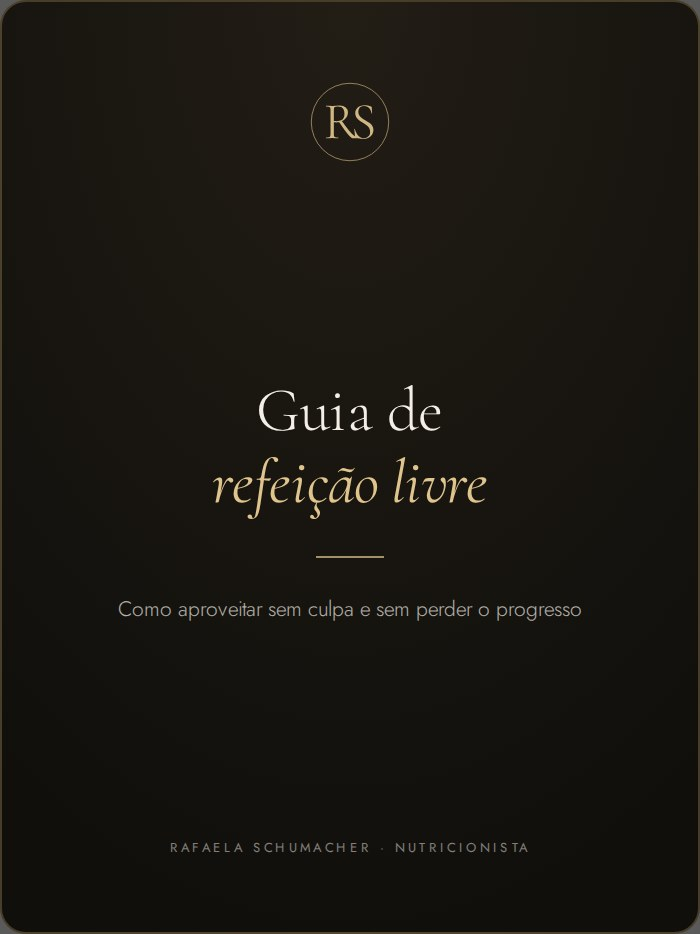
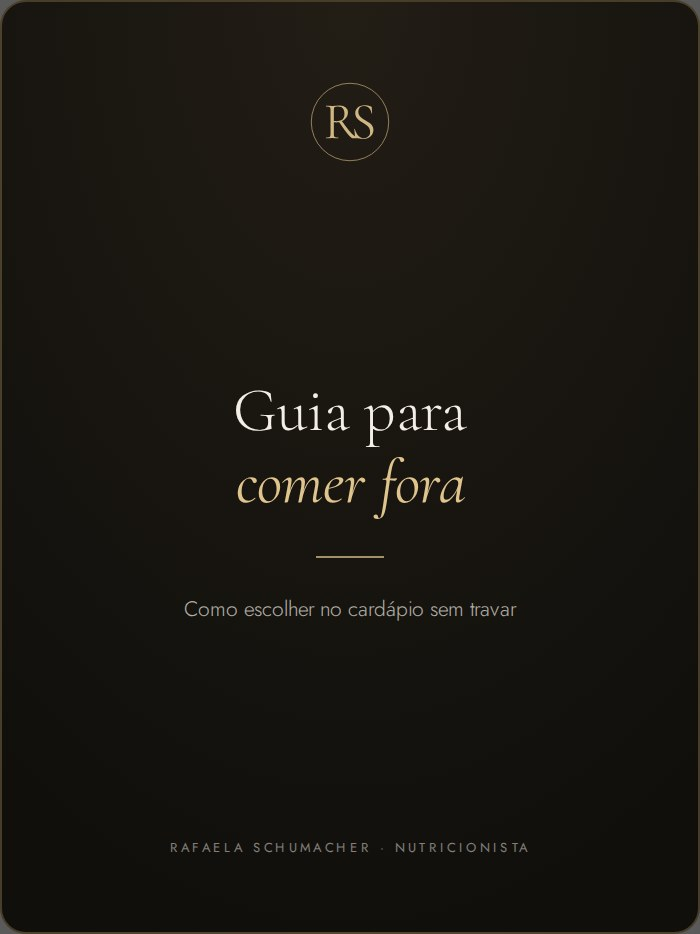

Escuto o seu caso
Você me conta o que está buscando e a gente vê se faz sentido seguir.
Para quem quer alcançar seus objetivos sem viver em função da dieta.
Conquistei sete títulos como atleta de fisiculturismo e vivi na pele uma rotina em que alimentação, treino e disciplina estavam presentes todos os dias. Essa experiência mudou a forma como eu enxergo a nutrição.
Aqui, nutrição não significa cortar tudo o que você gosta, abrir mão dos momentos sociais ou receber um plano alimentar impossível de seguir. A estratégia precisa fazer sentido para a sua rotina e para os seus objetivos, com os alimentos que você gosta de verdade.
Meu trabalho não é simplesmente entregar um plano alimentar. É acompanhar você de perto, entender o que está funcionando, corrigir o que não está e mudar a estratégia quando a sua vida mudar.
É aqui que eu entro.
Você me conta o que está buscando e a gente vê se faz sentido seguir.
Uma avaliação completa da sua rotina, do seu histórico e da sua saúde.
A partir do que você me contou, monto um plano alimentar pensado para a sua realidade, que você consegue manter no dia a dia.
A cada quinze dias, avaliamos o que funcionou, o que não funcionou e o que precisa mudar. A estratégia acompanha a sua rotina, e não o contrário.
Plano alimentar pensado para sua rotina, preferências, dificuldades e objetivo.
Acompanhamento da sua evolução, com ajustes ao longo do processo e suporte pelo WhatsApp.
Seu plano no celular, com diário alimentar, lembrete de água e outras ferramentas.
Calculadora de substituições e materiais de apoio para o dia a dia.
Dúvida no meio da semana? Me manda mensagem. Respondo em até 24 horas, qualquer dia.
Conteúdos que eu mesma preparo para te ajudar a colocar o plano em prática.

Como comer o que você gosta sem bagunçar a semana.
O que colocar no carrinho para a semana.

Como escolher no cardápio sem travar.
Me chame no WhatsApp que eu passo os valores e te ajudo a escolher.
Mensagens reais de pacientes, compartilhadas com autorização.
A consulta acontece por chamada de vídeo no Google Meet, de qualquer lugar do Brasil, e dura cerca de 60 minutos. Você só precisa de internet e de um lugar tranquilo para conversar.
Os valores variam conforme o plano escolhido. Me chame no WhatsApp que eu te passo todos os detalhes e te ajudo a escolher o que faz mais sentido para você.
A consulta é agendada após a confirmação do pagamento, e o acompanhamento é contado a partir da data da primeira consulta.
Sim. As solicitações de remarcação devem ser feitas com no mínimo 24 horas de antecedência e estão sujeitas à disponibilidade da agenda.
A Consulta Avulsa é indicada para quem busca uma orientação pontual. Já os acompanhamentos (Trimestral e Semestral) incluem check-ins quinzenais e suporte contínuo pelo WhatsApp ao longo de todo o período.
Quando faz sentido para o seu caso, sim. Não é obrigatório e não é a base do acompanhamento.
O plano é montado com o que você come. Isso entra na conversa da primeira consulta.
Me chama que a gente conversa sobre o seu caso e eu te indico o melhor formato.
Me conta pelo WhatsApp qual é o seu objetivo e o que hoje mais atrapalha sua alimentação.
A partir disso, eu te explico como funciona o acompanhamento e qual formato faz mais sentido para você.